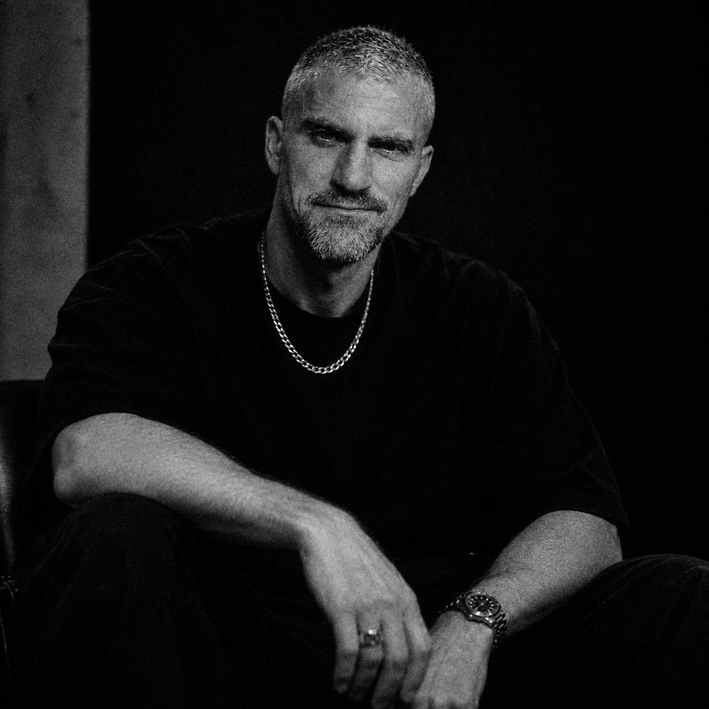

Flyers
Diseño de carteles y piezas digitales para anunciar eventos, fiestas y sesiones. Concepto visual, composición y adaptación a formatos para redes.
Ter tange

Techno hipnótico, crudo y percusivo. Ritmos físicos, tensión progresiva y atmósferas profundas.
Solicitar bookingBØRDAK desarrolla sesiones de techno hipnótico, crudo y percusivo. Su sonido combina bombos firmes, bajos profundos y percusiones secas de carácter tribal con capas atmosféricas y tensión progresiva.
El resultado busca un equilibrio entre impacto físico y concentración hipnótica: un groove que empuja la pista mientras evoluciona sin perder profundidad. En cabina, la selección se construye leyendo el espacio y dejando que el ritmo marque el recorrido.
Textura cruda, carácter industrial y energía sin pulir.

Profundidad, bajos envolventes y atmósferas oscuras.

Hipnosis, repetición y evolución progresiva.

Ritmos secos, percusión tribal y groove físico.

Una selección de sesiones que muestra distintas caras de su sonido.
Pincho con estos equipos o con cualquier otra configuración de club. Si tu cabina es distinta, escríbeme antes del evento y lo resolvemos juntos.

Pioneer DJ

Pioneer DJ

Pioneer DJ

Allen & Heath

Allen & Heath
Aceptados
¿Tu sala tiene otra configuración? Escríbeme antes del evento y confirmamos juntos el equipo disponible.
Sets de techno para eventos privados y sesiones a medida. Cuéntame el contexto, el espacio y el tipo de experiencia que buscas.
Diseño flyers y desarrollo visuales temáticos para eventos que necesitan una identidad propia. Cada propuesta parte de un concepto y se adapta al carácter de la música, el espacio y el público.
Diseño de carteles y piezas digitales para anunciar eventos, fiestas y sesiones. Concepto visual, composición y adaptación a formatos para redes.
Desarrollo de visuales temáticos para pantallas y escenarios: imágenes, secuencias y loops alineados con la identidad del evento.
Proyectos por encargo · Dirección visual y formatos según briefing.
Puedes escribirme en español o en inglés.
You can write to me in Spanish or English.
Dossier profesional en PDF (ES / EN) · Protegido con contraseña: solicítala por email.
